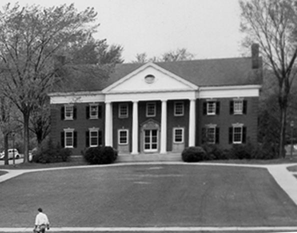

Chapter 12 on the roll
The Upsilon


- Position on the roll#12
- InstitutionUniversity of Rochester
- Chartered1858
- StatusActive since 1858
Notable brothers of the Upsilon

In the archive
Pages that name the Upsilon Chapter or its institution.
Named on 908 pages across 353 volumes of the archive.
…om the Alumni, should wait on Dr. Martin B. Anderson, the President of the University of Rochester, and invite him to address the Convention at such time as he might find convenient. It was moved and voted that when we adjourn, it be until half pas…
…niversity. useful man. Noyes is a, fine general scholar; has been UPSILON (University of Rochester 1858). Chapter Secretary of Home Missions and of Home Evangelization, Rooms, _59 State street, Rochester; meets Monday evening; correspondence to R^.…
Page2…erature of 'America. Mr. Smiley still desires to ascertain beheld with the Upsilon Chapter at the University of the author of the Latin Fraternity Hymn to the melody of " Integer Vitje," commencing "Conveniamus, fratres gaud- . Rochester,…
…inactive. ments to speak at Commencement. Of these appointments, UPSILON (University of Rochester 1858). Correspondence to Mr. as well as of those for the old Junior Exhibition, Psi U se J. A. Hayden, Lock Box ii, Rochester, N. Y. cured more than…
Page2…akes place with the with the names of nine or more Members of the Fraterni Upsilon Chapter, at the University of Rochester, Thursday, ty in the new General Catalogue. These cities are given May id, and Friday, May 'id. The Executive Council…
Page2…he ' ' Of her blood, her brain, her glory. Fraternity and the name of the Upsilon Chapter and oth On we go ad attiora ! in flowers. At the lower end was Long live Psi Upsiloa ! er emblems wrought
…sent inactive. ^. The Chi opens the new Collegiate year stronger UPSILON (University of Rochester 1858). Correspondence to Mr. than ever before, both in numbers and enthusiasm. Seven B. S. Day, Lock Box 11, Rochester, N. Y. new members, the flower…
Page4…classes, who were in sympathy against the The first attempt to establish a Psi Upsilon Chapter at " " dictation of the secret societies. This plan was executed Hamilton College was made, I think, in 1838, and failed. with wonderful success. Soo…
…norary members to Psi Upsilon The following telegram was received from the Upsilon Chapter : - " Upsilon and Alumni send fraternal greetings. Homeward bound dele-^ gates cordiaUy invited to rest here." On motion adjourned till 3 p. m. Af…
…ent inac tive. Theta : W. J. McNulty, '80. W. J. PoUard, '82. 12. UPSlLOy (University of Rochester 1868). Correspondence DeUa : L. M. Daniel, '80. to Mr. Frank W. Kelsey, box 430, Rochester, N. Y. Beta: E. W. Knevals, '80 ; P. G. Bartlett, '81 ; Sh…
Page16…l under the direction of the Executive present inactive. Council. UPSILON (University of Rochester, 1858).� 13. 5, The Diamond. Lock box 57, Schenectady, N. Y. Correspondence to Mr. B. F. Miles, box 503, Rochester,, EDITORS. N. Y. Henry Chancellor…
Page8…resting and very some encouraging figures. It seems that the condition of Upsilon Chapter. The question remains, then, why? the treasury has been constantly We do not purpose here to make a plea for the improving. For the benefit of those…
Page6…AGE Poetry The Diamond Lens ' 3 Hjalmar Hjorth Boyesen lo History ot the Upsilon Chapter 3 Pan-Hellenic Council 11 Editorial 8 Members Lately Admitted is Our Chapters 9 BOARD OF EDITORS : HENEY C. WOOD, - - - Editoe in Chief. Geobge F.…
…enient place for the members to drop in, either before or a History of the Upsilon Chapter of the Psi Upsilon Fraternity. after recitations, and spend their spare time in conver By George A. Coe. Read at the twenty-fifth anniversary of the…
…rd. He Kappa. Although a letter from this Chapter has graduated from the University of Rochester in the not appeared in The Diamond for some time, yet we For more than three years he has been class of '76. still live and prosper. on the Examiner…
…e existence of pate too readily perhaps, the assembling of that mimic the Psi Upsilon Chapter, but looks to it for leading men in every department. The captain of the foot "convocation" which we hope may soon help cele brate with us the comple…
…would ask Judge Tourgee to respond to Champagne Jelly. Orange Jelly. the "Upsilon Chapter." This announcement met with FRUIT. an enthusiastic response from the brothers. Malaga Grapes. Apples. Figs. Dates. Almonds. Judge Tourgee declared t…
…Harvey Jew . ell; Secretary, George R. Swasey, Boston, Correspondence to Upsilon Chapter, Box Mass. 502. 8. The Psi Upsilon Association of Buf Iota (Kenyon College, i860) Corres falo (1881). President, I. W. Willis; Sec pondence to Iota C…
Page13…chester, 1858) ell; Secretary, George R. Swasey, Boston, Correspondence to Upsilon Chapter, Box Mass. 502. 8. The Psi Upsilon Association of Buf Iota (Kenyon College, i860) Corres falo (1881). President, I. W. Willis; Sec pondence to iota C…
Page13…..... July 11, 1857. The Alpha (Harvard) Chapter suspended Close of 1857. The Upsilon Chapter established in Rochester Univer- , sity . .* Feb. 15, 1858. Convention held in New-York City June 24, 25, 1858. Conveniidn held with the Lambda (Colu…
…niversity of Chicago, Kenyon, Syracuse Univer sity, Union College, and the University of Rochester. At the front sat E. C. Stedman, Daniel H. Chamberlain, William E. Robinson, and Chauncey M. Depew, of the Yale Chapter ; Pres ident Charles Kendall…
…CONVENTION OF THE Psi Upsilon Fraternity, HELD WITH THE UPSILON CHAPTER, University of Rochester. Rochester, N. Y., Thursday and Friday. May 16 and 17, 1889. No XVIII of the Printed Series PUBLISHED BY THE EXECUTIVE COUNCIL. The Fifty-Sixth…
…E PSI UPSILON ! [Page 48.] Written for the annual Convention held with the Upsilon Chapter at Rochester, N. Y., May 3, 1878. THE PSI UPSILON QUEEN. [Page 52.] This may be sung to the "Portuguese Hymn," page 240. BEAUTIFUL NAME. [Page 53.]…
Page249…ndeavor, by the erection of a club house and the establishment of a strong Psi Upsilon Chapter, to unite the interests of the Fraternity centering here, and thus to strengthen Psi Upsilon. Cleveland
Page24…lon were bestowed upon a powerful body of students in Harvard College. The University of Rochester was brought into the fold in 1858, Kenyon College in i860, the University of Michigan in 1865, the University of Chicago in 1869, Syracuse University…
AS OTHERS SEE US. 47 Concerning our Upsilon Chapter in the University- of Rochester The Delta Upsilon Quarterly ior ]u\y, 1884, said: "The Psi U.'s claim to be the yvealthiest chapter in the col lege,…
…the Alpha on a a plane commensurate with its ancient pres tige. Upsilon. University of Rochester On the evening of October 1 1, tlje following were initiated into the Chapter and Fraternity from the class of '99 : Charles Edward Adams, Dunkirk,…
Page31…(1848-51), South Carolina College ( 1850-61 ), Princeton CoHege (1851-53), University of Rochester (1851-95), Brown University (1853-61, University of North Carolina (1854-63), Cumberland University (1858-61), and Washington-Lee University (1869-88…
Page51…etroit, Mich. William Stevens Perry, '54, Davenport, Iowa. UPSILON CHAPTER UNIVERSITY OF ROCHESTER. George Henry Fox, '67, New York City. fFrancis Willey Kelsey, '80, Ann Arbor, Mich. John Plunkett Morse, '95, Rochester, N. Y. Clarence D. Stone, '…
Page32…le Psi Upsilons, suc ceeded in obtaining consent to the institution of the Upsilon Chapter in the University of Rochester. Two years later, largely through the influence of William Walter Phelps, Beta '60, afterwards Minister to Aus tria, t…
Page11…silon '07) invited the Convention to hold its next Annual Meeting with the Upsilon Chapter at Rochester, N. Y. Brother Saxe {Lambda '00) moved to leave the matter to the discretion of the Council. Carried.
Page11…CONVENTION OP THE Psi Upsilon Fraternity held with THB UPSILON CHAPTER UNIVERSITY OF ROCHESTER ROCHESTER, NEW YORK May 14 and 15, 1908 No. XXXVII of the Printed Series. PUBLISHED BY THE EXECUTIVE COUNCIL. The Seventy-fifth Year of the Frat…
…dmission amongstus. Yours in the bonds, E. S. Dean, r Chapter, Class '90, University of Rochester.
Page30…versity. . .High & College Sts., Middletown, Conn. ALPHA Inactive UPSILON University of Rochester 41 Prince St., Rochester, N. Y. IOTA Kenyon College Gambler, Ohio. PHI University of Michigan 702 So. University Ave., Ann Arbor, Mich. OMEGA U…
…ty. .High & College Sts., Middletown, Conn. . ALPHA Inactive UPSILON University of Rochester . . 41 Prince St., Rochester, N. Y. IOTA Kenyon College Gambler, Ohio PHI University of Michigan 702 So. University Ave., Ann Arbor, Mich. OMEGA…
…ty. .High & College Sts., Middletown, Conn. . ALPHA Inactive UPSILON University of Rochester . . 41 Prince St., Rochester, N. Y. IOTA Kenyon College Gambler, Ohio PHI University of Michigan 702 So. University Ave., Ann Arbor, Mich. OMEGA…
…ty. .High & College Sts., Middletown, Conn. . ALPHA Inactive UPSILON University of Rochester . . 41 Prince St., Rochester, N. Y. IOTA Kenyon College Gambler, Ohio PHI University of Michigan 702 So. University Ave., Ann Arbor, Mich. OMEGA…
…University High & College Sts., Middletown, Conn. ALPHA Inactive UPSILON ^University of Rochester 41 Prince St., Rochester, N. Y. IOTA ^Kenyon College Gambier, Ohio PHI ^University of Michigan 702 So. University Ave., Ann Arbor, Mich. OMEGA U…
Page5…rsity. .High and College Sts., Middletown, Conn. ALPHA Inactive UPSILON University of Rochester. .41 Prince St., Rochester, N. Y. IOTA Kenton College Gambier, Ohio PHI University of Michigan 702 So. University Ave., Ann Arbor, Mich. OMEGA Uni…
…ersity. .High and College Sts., Middletown, Conn. ALPHA Inactive UPSILON University of Rochester. .41 Prince St., Rochester, N. Y. IOTA Kenyon College Gambier, Ohio PHI University op Michigan 702 So. University Ave., Ann Arbor, Mich. OMEGA Uni…
…versity. .High and College Sts., Middletown, Conn. ALPHA Inactive UPSILON University of Rochester. .41 Prince St., Rochester, N. Y. IOTA Kenyon College Gambier, Ohio PHI University of Michigan 702 So. University Ave., Ann Arbor, Mich. OMEGA Uni…
…niversity. .High and CoUege Sts., Middletown, Conn. ALPHA Inactive UPSILONUniversity of Rochester. .41 Prince St., Rochester, N. Y. IOTA Kenyon College Gambier, Ohio PHI University of Michigan 702 So. University Ave., Ann Arbor, Mich. OMEGAUniver…
…ersity. .High and College Sts., Middletown, Conn. ALPHA Inactive UPSILON University of Rochester. .41 Prince St., Rochester, N. Y. IOTA ILenyon College Gambier, Ohio PHI University of Michigan 702 So. University Ave., Ann Arbor, Mich. OMEGA…
…iversity. .High and College Sts., Middletown, Conn. ALPHA Inactive UPSILONUniversity of Rochester. .41 Prince St., Rochester, N. Y. IOTAKenyon College Gambier, Ohio PHIUniversity of Michigan Ann Arbor, Mich. OMEGAUniversity of Chicago. 5639 Univer…
…ersity. .High and College Sts., Middletown, Conn. ALPHA Inactive UPSILON University of Rochester. .41 Prince St., Rochester, N. Y. IOTA Kenyon College Gambler, Ohio PHI University of Michigan Ann Arbor, Mich. OMEGA UisnvBRSiTY of Chicago. .563…
…ersity. .High and College Sts., Middletown, Conn. ALPHA Inactive UPSILON University of Rochester. .41 Prince St., Rochester, N. Y. IOTA Kenyon College Gambier, Ohio PHI University of Michigan Ann Arbor, Mich. OMEGA Untvtersity of Chicago. 5639…
…ersity. .High and College Sts., Middletown, Conn. ALPHA Inactive UPSILON University of Rochester. .41 Prince St., Rochester, N. Y. IOTA Kenyon College Gambier, Ohio PHI Uiwversity of Michigan Ann Arbor, Mich. OMEGA University of Chicago. .5639…
…Uege Sts., Middletown, Conn. ALPHA (Harvard University) Inactive UPSILON University of Rochester. .41 Prince St., Rochester, N. Y. IOTA ElENYon College Gambier, Ohio PHI University of Michigan Ann Arbor, Mich. OMEGA University of Chicago. .563…
…llege Sts., Middletown, Conn. ALPHA (Harvard University) Inactive UPSILON University of Rochester. .41 Prince St., Rochester, N. Y. IOTA Kenyon College Gambier, Ohio PHI University of Michigan Ann Arbor, Mich. OMEGA University of Chicago. 5639…
…oUege Sts., Middletown, Conn. ALPHA (Harvard University) Inactive UPSILON University of Rochester 41 Prince St., Rochester, N. Y. IOTA Kenyon College Gambier, Ohio PHI University of Michigan Ann Arbor, Mich. OMEGA University of Chicago 5639 Un…
…lege Sts., Middletown, Conn. ALPHA (Harvard University) Inactive UPSILON ^University of Rochester 41 Prince St., Rochester, N. Y. IOTA Kenyon College Gambier, Ohio PHI ^University of Michigan Ann Arbor, Mich. OMEGA ^University of Chicago 5639…
…l take effect Standish Smith, next September. Associate Editor, UPSILON University of Rochester most outstanding event of recent is digging the excavation for their new THE date was the sixty-seventh annual ini chapter house. We, too, have had A…
Page59…llege Sts., Middletown, Conn. ALPHA (Harvard University), Inactive UPSILONUniversity of Rochester 41 Prince St., Rochester, N. Y. IOTA Kenyon College. Gambier, Ohio PHI Univrsity of Michigan Ann Arbor, Mich. OMEGAUniversity of Chicago 5639 Unive…
…ge Sts., Middletown, Conn. ALPHA (Harvard University) Inactive UPSILON University of Rochester 41 Prince St., Rochester, N. Y. IOTA Kenyon College .Gambier, Ohio PHIUniversity of Michigan 1000 HUl St., Ann Arbor, Mich. OMEGA Univeesity of Ch…
…azette, Unofficial Publication but disagreement with the faculty on of the Upsilon Chapter published about ' ' the marking system kept him from be- every two years. The gloom attendant ing initiated. Bob Percy is the son of on the end of va…
Page80…man, Thomas, SUloway, week-end. Wade W. Dauoh. Associate Editor. UPSILON University of Rochester TT is with great anticipation that the Class of '28 Brothers are looking forward to our Thurlow A. Hasely . . .Rochester, N. Y. Easter recess. The st…
Page58…J. Lea, competitors, easUy won the assistant Associate Editor. UPSILON ^University of Rochester A S the year draws to its close the hum begun and another week wUl mark their ^ official opening. However, the Brothers of labor (a very unfamiliar s…
Page56…ened. paid us an official visit last spring. Associate Editor. UPSILON University of Rochester W HTH a month of the new year already Those Brothers who enjoyed the hos " over, the Upsilon feels that it is pitality of the Psi during the Hamilton…
Page53…C. Bijou, sage to the Buffalonians when he ad- Associate Editor. UPSILON UNIVERSITY OF ROCHESTER TT IS with a great deal of pleasure gau is on the "Campus" staff while that the Upsilon announces the Pledges Zimmer, Lynes, Thatcher and pledging of…
Page52…f Rochester is to Move to a New Site i>f Roc \"\'iLL Be of Interest to the Upsilon Chapter and Members of the
…, N. Y., on May 23, 1858, He received his Bachelor of Arts degree from the University of Rochester in 1880, and the same institution gave him the Ph, D, in 1886 and LL. D. in 1910. He taught as an Instructor and Professor at Lake Forest University…
…ich are awarded each year to the two members of the sophomore class of the University of Rochester who present the best exercises in declamation. After his death it was found that his will provided for the establish ment of the Charles A. Dewey Fun…
…s. Brother Story has held an active interest in the Upsilon chapter at the University of Rochester and he assumes his new office with the best wishes of all Psi U men, especially those of the Theta and Upsilon who know him so well. Mr. Story was bo…
…"Hell Bent XI Wesleyan University (No communication received) UPSILON University of Rochester the last communication, the somewhat refreshed by new rugs and QINCE *^ House has witnessed several paint, generously provided by our Chapter Alumni,…
Page71…system of grading but the comparative standings are, of course, relative. UNIVERSITY OF ROCHESTER Scholarship Cup 192fi-1927 Managers 78.5 Second Assistant Managers. .. .74.23 Non-Fraternity Seniors 77.73 Total College Men 73.84 Class Officers 77…
…, and other plans, are underway which will lead to the completion of a new Upsilon Chapter House by September 1930. At our June meeting the following officers of the Psi Upsilon Alumni Association of Western New York were elected: H. Dean…
…Brinton Sherwood Washington, D. C. John J. Walsh Davenport, la. UPSILON University of Rochester Class of 1932 Theodore Holton Benedict Rochester, N. Y. John Otto Benz Rochester, N. Y. Lucius L. Button Rochester, N. Y. Fred Herbert Gowen Rochest…
…campus. Steve ComeU is circulation manager of Associate Editor UPSILON University of Rochester the last issue of The Diamond speaker. Plans for the new chapter house SINCE the Upsilon has successfuUy passed an initiation of examinations. and m…
…Craw, ment period which lies just ahead. It is Associate Editor UPSILON University of Rochester enjoyable spring dance was year. The intramural basebaU season is AVERY held at the chapter house on May 1, with music by Art Taylor's orchestra wel…
…Jr., on the soccer team for the last two years Associate Editor UPSILON University of Rochester losing a single brother ers' enthusiasm than the unprecedented suc WITHOUT and with a unity and spirit which nothing conquer, the Upsilon can is en…
…ierson Minneapolis, Minn. Jonathan Nicholl Rawson Hamilton, N. Y. UPSILON University of Rochester From the Class of 1932 Gordon H. Diehl Rochester, N. Y. Alfred N. Hartshorn Rochester, N. Y. Elvryn W. Thomas Akron, N. Y. From the Class of 1933 T…
…enant. He later served as personnel officer of the S. A. T. C. unit at the University of Rochester. Dr. Clark was a member of the Modern Language Association of Amer ica, and the American Dialect Society. Surviving are his wife, Mrs. Martha Haskell…
…a few words as to what he meant to Psi Upsilon at large. There is hardly a Psi Upsilon Chapter house, from the Kappa to the Epsilon, which has not an autographed photograph of Brother Taft in the in learning the place of honor beside its hearth…
…ho our next speaker hails from an eastern chapter, and is a trustee of the University of Rochester, Chicago and the middle west proudly lays claim to him. I did not want you to get the impression that all the good speakers come from New York, so af…
…rs Fox and Corcoran attended the formal dedi cation of the new home of the Upsilon Chapter, and several unofficial visits have been made by members of the Council to other chapters. Additional chapters will receive official visits from the…
Page21…back to his own college, too, at the celebration of the opening of the new University of Rochester campus. Many's the change there has been in that City and institution since he joined our Fra ternity, as a Freshman of fifteen, fifty-three years ag…
…ry, the idea for improvement which was theirs. Associate Editor UPSILON University of Rochester the strenuous rushing Immediately following the exams, the FOLLOWING season of early December, the chapter settled down for some real studying chap…
…ho our next speaker hails from an eastern chapter, and is a trustee of the University of Rochester, Chicago and the middle west proudly lays claim to him. I did not want you to get the impression that all the good speakers come from New York, so af…
…r made this work possible. ^ ,-> i 11 r raternally, John E. Deming, Treas. Upsilon Chapter Thanks for sending directory, check enclosed, very kindest regards. James R. Henry, Omega '02 Very nice piece of work which incidentally enabled my…
…Wilson Bethesda, Maryland Rowland Steele Wilson Columbus, Ohio UPSILON University of Rochester Oass of 1934 Paul Edward MacNamara Rochester, N. Y. Qass of 1935 Robert William Collett Oak Park, 111. David Stephen Grice Chicago, 111. Howell Will…
…11. Beta Theta Pi 8.930 6. Psi Upsilon 9.934 12. Sigma Nu 8.400 UPSILON University of Rochester College Year 1930-31 1. Kappa Nu 78.51 6. Sigma Delta Epsilon 74.47 2. Theta Chi 77.60 7. Delta Upsilon 74.22 3. Psi Upsilon 75.76 8. Theta Delta Ch…
…fraternities. Naturally some of us object. Thomas R. Forbes, Upsilon '33 University of Rochester. LIABILITY and AM a member of powerful national Greek letter organization a I qualified to know the untruthfulness of phrases such as "making best…
…ch, Conn. R. L. Simpson Yonkers, N. Y. A. W. SiMONDS Dayton, 0. UPSILON University of Rochester Class of 1935 Kenneth Paul McConnell Rochester, N. Y. Class of 1936 Donald Anthony Barnes Rochester, N. Y. John Willlam Corris Rochester, N. Y. Rober…
…slee The freshmen have also been active during Associate Editor UPSILON University of Rochester has passed and we now the first Junior captain in "yars and yars." INITIATION make a survey of what has since November. happened Brother Dave Grice…
Page68…ege Sts., Middletown, Conn. ALPHA (Harvard University) Inactive UPSILON University of Rochester Rochester, N. Y. IOTA Kenyon College Gambier, Ohio PHI University of Michigan 1000 Hill St., Ann Arbor, Mich. OMEGA University of Chicago 5639 Uni…
Page61…year I graduated. While I was on the Council a Convention was held at the University of Rochester, and I thought it a good chance to come up to Albion and call on my friends there. I was named to pre side at the Convention I resigned from the Exec…
…ns on the hundredth birthday of Psi U. On to one hundred more. FratemaUy." The Upsilon Chapter Gambier, Ohio "The Iota Chapter joins with all Psi UpsUon's commemoration of its hundredth anniversary. May the spirit of Brotherly love and affecti…
…. Howland, Howland, Barton, and Harfst were ap- Associate Editor. VPSILON University of Rochester the last communication many chapter for some time", and due credit SINCEthings of note have happened in the HaUs of the Upsilon. The rushing goes to…
Page10222 THE DIAMOND OF PSI UPSILON UPSILON University of Rochester Class of 1938 Willard Harlan Bittner Penfield, N. Y. Donald Blynn DuBois Delhi, N. Y. Leo Geyer Rochester, N. Y. Albert Gilbert Rochester, N. Y. Fran…
…g Resolutions : No. 1. Resolved: That the next Convention be held with the Upsilon Chapter, and that if this Chapter could not be our hosts, the matter be referred back to the Executive Council for settlement. On motion duly made, seconded…
…com mand, has letters in two sports, and cap- Associate Editor. UPSILON University of Rochester selection of Alan C. Valentine routine activities, and the approaching THE as president of the University of Rochester is one of the outstand term ex…
Page32…e annual Junior-Senior Prom in a Associate Editor. week or two. UPSILON University of Rochester Wednesday, February 20, the other contenders, Don Barnes and George ON UpsUon initiated six new men into Psi UpsUon. The initiates were: Bantel, and…
…berts Rose, was not possible as planned. Spring Associate Editor. VVSILO^ University of Rochester happiest news which has come and as editor in chief of the Soapbox, the THE to the Upsilon in some time is the annomicement brought back by college…
…Harold E. Winston '14 A. Avery Hallock '16 Theodore Richards '88 UPSILON UNIVERSITY OF ROCHESTER Harvey D. Blakeslee '00 Samuel M. Havens '99 Charies R. Witherspoon '94 Thornton K. Cooper '01 Asa D. McBride '22 Robert A. Witherspoon '97 James B.…
…., Middletown, Conn. 1850 ALPHA Harvard University, Inactive 1858 UPSILON University of Rochester Rochester, N. Y. 1860 IOTA Kenyon College Gambler, Ohio 1865 PHI University of Michigan 1000 Hill St., Ann Arbor, Mich. 1869 OMEGA University of C…
Page253…E PSI UPSILON FRATERNITY HELD UNDER THE AUSPICES OF THE UPSILON CHAPTER UNIVERSITY OF ROCHESTER ROCHESTER, N.Y. APRIL 2, 3 AND 4, 1936 NO. LXIII OF THE PRINTED SERIES Published by THE EXECUTIVE COUNCIL THE ONE HUNDRETH AND THIRD YEAR OF T…
…the Annual Convention of the Psi Upsilon Fraternity will be held with the Upsilon Chapter at Rochester, New York on Thurs day, Friday and Saturday, April 2, 3 and 4. A complete announcement of all details of the Convention will be publishe…
TABLE OF CONTENTS Page Convention with the Upsilon Chapter 143 High Spots of the Convention 146 Psi Upsilon Club of Cleveland Meets 147 An Open Letter From the Board of Editors 148 A Short History of the…
…ble interest to the Brothers Ed.) November, 1921 The last chapter on the Psi Upsilon Chapter Roll was the Nu at the University of Toronto, Dr, C. S, F, Lincoln, Kappa '91, who had spent many years in China contributed an article entitled "So…
…. Wallu^g Port Monmouth, N.J. William Winter, Jr New York, N.Y. UPSILON University of Rochester Class of 1940 Edward T. Auer Germantown, Pa. Earnest L. Badenoch Oak Park, 111. Allen M. Brewer Rochester, N.Y. Alfred M. Decker Brockport, N.Y. Robe…
…ers Walter V. Bennett, Jr. in soccer and track. Associate Editor UPSELON University of Rochester The initiation of eleven men, all worthy are representing the University on the of admittance into Psi Upsilon, which intercollegiate hardwood. All…
…r Fox a and his family have vigorously justified. He matriculated at the University of Rochester, where he was initiated by the Upsilon Chapter; and then began a devotion to Psi Upsilon that continued life-long. While an undergraduate, he left Ro…
…ohn M. Stacey, outstanding varsity man. Saturday Associate Editor UPSILON University of Rochester It was strange to find last year's seniors The chapter took a very close second gone from the House when we came in the interfraternity scholarship c…
…ng communication has just been received from the office of the Dean of the University of Rochester: "The point- hour ratio of the students in Psi Upsilon for the year 1936-1937 was 1.642. It was necessary to carry this ratio to three decimels to d…
THE DIAMOND OF PSI UPSILON 179 UPSILON University of Rochester Donald DuBois, '38, has been elected Scholastically the house stands well head of the House. He is a psychology in spite of some signs of slackness.…
…h T. Ailing at the age Keene, New York. of eighty-two. Graduating from the University of Rochester in the class of 1876, elected to Phi Beta Kappa, he was Eugene Malcolm Anderson, a Trustee of his Alma Mater for forty- Iota 'U five years. Treasurer…
…Mere, N. F.; Douglas Boyd Baud, UPSILON John's, N. F., David Mossom Boyd, University of Rochester Victoria, B. C; John Francis Dixon, Floyd Edward Bliven, Erie, Pa.; Toronto; James Garvin Easson, To WiUiam Bruckel, Avon, N. Y.; Leonard ronto; Pete…
…th the hockey game between Spring field and Hamilton at the Second HamUton University of Rochester College Winter Carnival, Brother George Elections for second term: Head of the Vicary played his last intercollegiate game House, Brother Dustan; soc…
…and Director of Pub person on railroads. In 1925, he was lications for the University of Rochester. Centenary Director of the Baltimore & Many of the articles appeared in Col Ohio Raihoad "Fair of the Iron Horse." lier's, Saturday Evening Post, Har…
…; Joseph SewaU, Old Town, Me.; UPSILON Frank Hazeltine Shaw, Belfast, Me.; University of Rochester Robert Teichert Skinner, Detroit, Mich. ; Class of 1943: George AUison, Yonk Alden Brooks Sleeper, II, Swampscott, ers, N. Y. ; Harry Barrett, Niagar…
…ighthouse Service) Thornton Kendrick Cooper, onetime Frank Heermans Field, University of Rochester star athlete, died February 22, 1938, at Apalachicola, Upsilon '76 Fla. He was with the U. S. Lighthouse (Buffalo Heating Company Executive) Service.…
…whom received their college educa villa near Florence, Italy. tion at the University of Rochester. Dr. Strong, born in Haverhill, Mass., in 1862, studied at the Guertersloh William Schuyler Perrine, Omega '89 Gymnasium in Germany, from 1881 to 18…
…at Psi Upsilon signally honored on the the end of his second year. (He com University of Rochester campus by pleted his course years later.) He the advancement of two of its was chiefly interested in writing prominent alumni to important scholarly…
…o, N.Y. dish, Jr.; George Winthrop Story, III; John Henry Waller. UPSILON University of Rochester PI Class of 1944: James Raymond Beall, University of Syracuse Rochester, N.Y.; Dougall Muncey of 1942: WiUiam Lord, New Class Davis, Elmhurst, N.Y.;…
…igh and College Streets November 20, 1843 Middletown, Connecticut Upsilon University of Rochester College Campus February 15, 1858 Rochester, New York Iota Kenyon College Gambier, Ohio November 24, 1860 Phi University of Michigan 1000 Hill Stree…
Page18…ed apphcation for a chapter from the contacts with local famkies and fac University of Rochester, and in 1860 ulty, as the genealogical records at the petition from Kenyon. test, and select gatherings of con The decade from 1850 to 1860 was genia…
…of the Its motto, "speed and ever speed"; Its sunshine rises in the night. University of Rochester and its move And ere the day-break it is hght! toan entirely new campus on the Awake and sing: Psi U forever! site of a country club in Rochester, Bu…
…un in 1901, by granting the The Armistice was declared less petition for a Psi Upsilon Chapter than a month after the War Conven at the University of Toronto. Then tion adjourned. The Council devoted came recommendations for annual the rest of…
Page23…ht by George A. Coe, and pub PROCEEDINGS SEMI-CENTENNIAL CON lished by the Upsilon Chapter. Con VENTION, 1883. An account of our tains lists of Upsilon's honor men and 50th Anniversary Proceedings. Pub short history of the Chapter. 32 pp. l…
Page11…e Alpha (Harvard) Chapter suspended Close of 1857. Omaha, Neb April, 1869. The Upsilon Chapter established in Rochester Univer The Omega Chapter established in Chicago University . April 17, 1869. sity Feb. IS, 1858. Convention held with the Th…
…COLGATE moral support of the eleven Psi U's on BANQUET ON EVE OF SYRA the University of Rochester football CUSE GAME team. Pictures of the Union and Hamil About 90 Pi brdthers attended the ton games were reviewed and Coach third annual Colgate B…
…'42, Briggs, '43, and Dolan, '43, are anxiously awaiting the general call. University of Rochester Hugh Munro, Jr. Associate Editor Brother Gay, retiring head of the house and retiring president of the Students' Associa tion, has been leading a mov…
Page54…esleyan University 184.3 High and College Sts., Middletown, Conn. UPSILONTUniversity of Rochester 1858 Rochester, N.Y. IOTA I Kenyon College- 1860 Gambier, Ohio PHI * University of Michigan 1865 1000 HiU St., Ann Arbor. Mich. OMEGA fi Universit…
Page64…w mize the spirit in which 50 Psi Us One whom no time can part" met in the Upsilon Chapter Room are on the afternoon of Sunday, March "Linked by a chain 30, 1941, to dedicate a memorial Whose diamond clasp I case for Psi U badges of deceas…
Page21…esleyan University 1843 High ana College Sts., Middletown, Conn. UPSILONT University of Rochester 1858 Rochester, N.Y. IOTA I Kenyon College 1860 Gambier, Ohio PHI * University of Michigan 1865 1000 Hill St., Ann Arbor. Mich. OMEGA fi Univers…
Page63…director of the Todd from Washington, D.C. to Neiv York City. Union at the University of Rochester for the past three years has left his post for active KAPPA CHAPTER duty in the Navy Department in Washing ton. Lieutenant Corris is at present stati…
…Executive Council and colleges and fraternities, it is an interesting the Upsilon Chapter of Psi Upsilon, coincident that The Annals appeared a little in advance of the forthcoming The January 28, 1942." Lester O. Wilder, Upsilon '11, Dean…
…m Adm. Nimitz, we learn as we go to press. The award was made for conspicu Upsilon Chapter ous bravery during the battle of the Announcement was made last April Coral Sea. that one of the prized Guggenheim Fel Hogan piloted a carrier-based…
…High and College Streets November 20, 1843 Middletown, Connecticut Upsilon University of Rochester College Campus February 15, 1858 Rochester, New York Iota Kenyon College Gamhier, Ohio November 24, 1860 Phi University of Michigan 1000 Hill Street…
Page5…eral art students from which, to draw membership vdll be depleted. UPSILON University of Rochester The present undecided status of the The real effects of the war struck college reserves makes a definite pre home last week at the Upsilon when dicti…
Page28…Editor IOTA Kenyon College Thus far the Iota has managed to remain UPSILON University of Rochester fairly intact, having escaped the ravages of the Since the beginning of the new year the draft and military reserves for the past two months. However…
…e. He was buried in Arlington National Cemetery at Washington. He left the University of Rochester in his second year to enter Annapolis. In World War I he was a convoy commander. His last assignment was commandant of the Puget Sound Navy Yard. He…
Page29…., Middletown, Conn. Edwin O. Smith, '93, Mansfield Depot, Conn. UPSILON T University of Rochester 1858 c/o Alumni President Harold L. Field, '10, 818 Powers Bldg., Rochester, N. Y. IOTA I Kenyon College 1860 Gambier, Ohio Walter T. CoUins, '03…
Page35…an De Walle held degrees Mercer B. Tate, Jr., Eta '20, a vs^idely from the University of Rochester and known attorney, died on October 21, Harvard University. At Harvard he 1943, at his home in Mount Airy, Penn won a traveling fellowship for a year…
…from which place he entered the organ, are recited fourteen tributes paid University of Rochester and the Up to Brother Havens by as many other silon. As an undergraduate he was ac officers and employes of the Company, tive in college and fraterni…
…lsted, '47 Associate Editor XI Wesleyan University The Xi is still UPSILON University of Rochester , functioning as nearly nor mally as wartime conditions will permit. We On April 27 the Upsilon declared a mora now number eight brothers and we have…
…e are eighteen active alumni and four undergraduates now constituting the Upsilon Chapter. In addition, an initiation, supervised by alumni, was held in May, at which three new men were initiated. A new freshman class will enter in July, a…
Page8…, Middletoivn, Conn. Edwin O. Smith, '93, Mansfield Depot, Conn. UPSILON T University of Rochester 1858 c/o Alumni President Harold L. Field, '10, 818 Powers Bldg., Rochester, N. Y. IOTA I Kenyon College 1860 Gambier, Ohio Walter T. Collins, '03,…
Page36…., Middletown, Conn. Edwin O. Smith, '93, Mansfield Depot, Conn. UPSILON T University of Rochester 1858 c/o Alumni President Harold L. Field, '10, 818 Powers Bldg., Rochester, N. Y. IOTA I Kenyon College 1860 Gambier, Ohio Walter T. CoUins, '03,…
Page35…, Middletoton, Conn. Edwin O. Smith, '93, Mansfield Depot, Conn. UPSILON T University of Rochester 1858 c/o Alumni President Harold L. Field, '10, 818 Powers Bldg., Rochester, N. Y. IOTA I Kenyon College 1860 Gambier, Ohio Walter T. Collins, '03,…
Page36…., Middletown, Conn. Edwin O. Smith, '93, Mansfield Depot, Conn. UPSILON T University of Rochester 1858 c/o Alumni President Harold L. Field, '10, 818 Powers Bldg., Rochester, N. Y. IOTA I Kenyon College 1860 Gambier, Ohio Walter T. Collins, '0…
Page35…VE PSI UPSILON! [Page 48.] Written for the annual Convention held with the Upsilon Chapter at Eochester, N. Y., May 3, 1878. THE PSI UPSILON QUEEN. [Page 52.] This may be sung to the "Portuguese Hymn," page 240. BEAUTIFUL NAME. [Page 53.]…
Page279…for the Xi are bright. On November 1st. Wesleyan opened her doors UPSILON University of Rochester to the first all-civUian enrollment in three Slowly but surely the UpsUon is retuming years. The Halls of the Xi echoed with laugh to anormal peaceti…
…., Middletown, Conn. Edwin O. Smith, '93, Mansfield Depot, Conn. UPSILON T University of Rochester 1858 c/o Alumni President Basil R. Weston, '21, 600 Reynolds Arcade, Rochester 4, N.Y. IOTAIKenyon College 1860 Gambier, Ohio Walter T. CoUins, '03,…
Page35…f What Transpired at a Recent Session Meeting of May 6, 1946 report on the Upsilon Chapter, the condition of which was promising. The Executive Councfl met in New York Brother Richards reported on his visits to on May 6, 1946. President Sco…
24 THE DIAMOND OF PSI UPSILON and Dan Murphy, secretary. UPSILON University of Rochester In summing up, the Upsilon is weU on its The Upsflon is fast retuming to its pre way to one of its most successful years. war status, especially sinc…
…the meeting, from the Executive Council. It was voted but stating that the Upsilon Chapter had that Brother Berry's resignation be ac reopened October 5, that the Chapter ex cepted with regret and with appreciation pected 60 active members,…
…ch Treat Club he became Medical Superintendent of the of New York and tiie University of Rochester Montreal General Hospital, then entered pri Alumni Association. He leaves a widow, two vate practice. Serving overseas in the First sons and a grands…
…Schenectady, April 26 and 27, and report that the brothers of the UPSILON University of Rochester Theta put on a fine week-end for the visiting At this writing we find the UpsUon a httle delegates. We hope to have an even larger behind on the news…
Page11…d 'Hoot' Dundas, who was married during the summer, starting guard UPSILON University of Rochester 'Tex' Jordan, and John Meyer, Judge Robert Thirty-six active brothers, seven of whom son, and Frank Binswanger. Tex Cotins is are married, returned t…
…ollege 1843 Psi Hamilton CoUege 1843 Xi ^Wesleyan University 1858 UpsilonUniversity of Rochester 1860 Iota Kenyon College 1865 Phi ^University of Michigan 1869 Omega University of Chicago 1875 Pi Syracuse University 1876 Chi Cornell Univers…
Page4…id Jones, LeRoy, N.Y.; Thomas Frank Joyce, Rochester, N.Y.; Sam J. UPSILON University of Rochester Karng, Kingston, N.Y.; Edward Kennedy, With the first term of the school year being Rochester, N.Y.; Karl Roff Kursten, Rochester, rushed to a conclu…
…metimes all three at came "Coquette," the play about a tragic once. At the University of Rochester, Southern flirt which, when it was finally where he was an undergraduate, he first produced five years later, sent Helen Hayes stumbled onto the stag…
…DIAMOND F PSI UPSILON ated as a Master of Business Administration UPSILON University of Rochester and Curtis Andrew Smith as a Doctor of Since last reporting, two new brothers have Medicine. About half of the Chapter wiU re been initiated within t…
…y in good shape, and a UPSILON new feature is the replacement fund for fur University of Rochester niture.. The Chapter is seriously considering (Wilham S. Simpson, Jr., '49). The Chapter a father's day program, and would appreciate has just gradua…
Page20…surplus. Xi (Passed temporarily). Upsilon (Charles H. Wadhams, Jr., '50). The Upsilon Chapter Page Eleven
Page12…we look out there to the sunset we'll think of Pi, and Chi will invade the Upsilon Chapter. how much he meant to us and to thousands of George Irwin McKelvey, III is the new Xi and Wesleyan men of how he exemplified house president, replaci…
…n, Conn Frank B. Cawley, '14, Avon Old Farms School, Avon, Gonn. UPSILON T University of Rochester 1858 Rochester, N.Y. Nicholas E. Brown, '28, 5 Soudi Fitzhugh St., Rochester 4, N.Y. IOTA IKenyon College1860 Gambier, Ohio Walter T. Collins, '03, 5…
Page30…, Conn Frank B. Cawley, '14, Avon Old Farms School, Avon, Conn. UPSILON-T- University of Rochester-1858 Rochester, N.Y. Nicholas E. Brown, '28, 5 South Fitzhugh St., Rochester 4, N.Y. lO 1 A i. Kenyon College 1860 Gambier, Ohio Walter T. Cofiins,…
Page39…SILON University of Rochester Mass.; and Peter H. Wingate, Rochester, N.Y. The Upsilon Chapter was greatly grieved All these are freshmen. The two members of this summer by the loss, on September 14, of the class of 1952 are William Galvin of B…
…e Annual Convention at Wesleyan in 1953. Upsilon (Norman A. Burgess, '52). The Upsilon Chapter has greatly improved the physical condition of its House during the past year. The exterior was completely painted and a new steel fire escape was a…
Page18…man , Thatcher William Rea, Jr. Associate Editor Associate Editor UPSILON University of Rochester PSI Hamilton College The Upsilon chapter pledged a group of The winter on College Hill promises to be outstanding freshmen on November 2. They an ext…
…ually successful cock UPSILON tail party and informal dance on the weekend University of Rochester ofFebruary 11. Because of its campus-wide The halls of the UpsUon have been very popularity another simUar occasion is planned active of late with br…
…by the Alumni Association of Psi Upsilon, will be awarded annually io the Psi Upsilon Chapter maintaining the highest academic record for the college year. Any Chapter winning the bowl for three consecutive years will obtain permanent possessi…
…ation. draft by staying in the upper half of their A special honor for the Upsilon Chapter class. came about this summer when Brother George Our new president. Hunter W. Finch, McKelvey, '50, was appointed alumni secre whose home is now in…
…ace, '52). Scholastically and socially, the Upsilon was outstanding at the University of Rochester. The past year, under the supervision of Presidents Youngman and Dunham, we main tained a scholastic average substantially superior to the University…
…Rochelle, N.Y., and grad activities. uated from New Rochelle High School. Al The Upsilon Chapter has been equally though he missed last season because of in active extra-curricular activities. No less in juries, he is a starting guard on the foot…
…UPSILON 107 stopped at a reasonable hour so that aU ship was accorded the Upsilon Chapter. might be in good shape for the important The Convention also approved the recom business meetings to follow. mendations that the improved records of…
…h him for a year. I had eenth floor. The Psi Upsilon Club went entered the University of Rochester and along with them under a similar arrange had been initiated into the Psi Upsilon ment to that we had in the Manhattan Fraternity. I then joined t…
THE DIAMOND OF PSI UPSILON 55 ' ^ f mffl ~v ^1 Eta Chapter of 1885 Upsilon Chapter of 1883
…us visiting places had been in splendid shape. Brothers Groves and UPSILON University of Rochester HaUenberg had the pleasure of meeting many To celebrate the advent of Christmas and of the gentlemen of the Delta Chapter, and the end of classes, th…
…ochester Free Acad sociated with Dr. WiUiam S. Ely UpsUon '61. emy and the University of Rochester, A.B. Dr. Young was greatly interested in the 1885. A.M. 1888, Phi Beta Kappa, Psi Upsilon. Western New York School for Deaf Mutes After his graduati…
Page34…team and also five Psi U. starting men on the varsity soccer team. UPSILON University of Rochester This fall the House is looking forward to This semester the Brothers came back from a successful intra-mural football season and their summer vacati…
…iate Editor Upsilon Pledges Robert Auchinachie, 3 Stone Road, R.D. UPSILON University of Rochester #2, Binghamton, N.Y. This fall the University of Rochester cele Bmce C. Bower, 24 Union St., Leroy, N.Y. brated its first undefeated footbaU season.…
Page24…he Class of '55. Utica, N.Y., was elected President. Dave Other men of the Upsilon Chapter are serv promised a return to the normalcy of pre vious years through sound, efficient adminis ing actively in the Glee Club, Stagers, The tration, a…
…o was on the Dean's A. Northey Jones, Beta Beta '17, Treasurer list at the University of Rochester where he of the Executive Council has been nominated won a B.A. degree, played varsity footbaU, a director of the Connecticut General Life tennis and…
…1842 has been honored to have the Beta Beta and sinceFebruary 4, 1880 as a Psi Upsilon Chapter on the campus " 'Neath the Elms." Why do I believe in fraternities? I an swer this query with frankness and candor, without reference to the seventy-…
…n is being written, the minutes before the start of Christmas vaca UPSILON University of Rochester tion are waning. The Psi got into the swing of the Yuletide Season with the annual Christ mas party in honor of the pledges on Decem ber 12. With a w…
Page23…commence Notes from the Chi: Eight Chi men are now ment exercises at the University of Rochester. on the Cornell University Council, Foster M. Coffin, '12, Director of Cornell's Willard Winthrop Bancroft, Kappa '16, has virtu Straight HaU; Donald…
…attendant on it to all the alumni who can possibly make it back. UPSILON University of Rochester Henry C. Skehan, Jr., Associate Editor with their plans for With the advent of the Spring social and FoUowing through athletic seasons, many Xi Broth…
Page17…n the soccer team. Broth ers Fricke and Dreisbach are also members UPSILON University of Rochester of the squad. Pledges Arnold and Amrhein have looked particularly impressive for the freshmen. Also out for the yearling team are pledges Banfield, B…
Page16…sted and obtained permission to address the Convention. He stated that the Upsilon Chapter desired to extend a warm invitation to the Fraternity to hold the 1958 Convention with the UpsUon Chapter as host. He further stated that he underst…
Page28…ends. are very proud of. Jim Tait, '57, of Rochester was initiated UPSILON University of Rochester during the Fall to become the 44th active Brother. At the annual school Touchdown Dinner many Psi U's received recognition for their athletic prowess…
Page24…cheval; Corresponding Secretary, Bob Burch; and Social Chairman, Ed Doane. The Upsilon Chapter is looking forward ex pectantly to next fall when the completion of Coming down the home stretch of another the new women's center will result in bot…
Page18…letion by next fall of the new women's center, the Brothers wiU be UPSILON University of Rochester afforded the added inspiration of having the co-eds housed on the same campus grounds. Bob Burch, Associate Editor So that we may look our best for t…
Page26…holarship suffered family or financial reverses during his purposes at the University of Rochester or coUege course which makes it difficult or im Hamilton College. possible for him to continue to serve his col A member of the Scholarship Committee…
…sted and obtained permission to address the Convention. He stated that the Upsilon Chapter desired to extend a warm invitation to the Fraternity to hold the 1958 Convention, the centennial year of the Upsilon, with the Upsilon Chapter as h…
…nyone who may be passing through Clinton to visit us at any time. UPSILON University of Rochester Mr. and Mrs. Lloyd Burritt House Mother and Father of the Upsilon m^^mr J-^CK Simmons vi^^3L. Associate Editor tary; Jack Simmons, Corresponding Sec…
Page23…n, Conn. Charles B. Stone, '18, 53 Warwick St., Middletown, Conn. UPSILON University of Rochester 1858 Rochester, N.Y. Frederick W. Zimmer, '29, 536 Burke Bldg., Rochester, N.Y. IOTA I Kenyon College 1860 Gambier, Ohio Walter C. Curtis, '37, 21…
Page44…mittee to ex amine the bases of awarding interfraternity UPSILON trophies. University of Rochester The Chapter has once again lent its support to the University Chaplain's OiBce by being host to a rehgious conference in the Psi U suite. The confere…
…was accepted by the Con extended the greetings of the Phi Chapter vention. The Upsilon Chapter extended to the Convention. The meeting was then a similar invitation to the 1958 Conven turned over to Benjamin T. Burton, Chi tion. '21, President…
…sted and obtained permission to address the Convention. He stated that the Upsilon Chapter desired to extend a warm invitation to the Fraternity to hold the 1958 Convention with the UpsUon Chapter as host. He stated that 1958 would be the c…
…ening, which was followed by formal dance. Saturday afternoon, the UPSILON University of Rochester a Brothers enjoyed a most amusing roller-skat ing party which was followed by cocktails and Dixieland music. The seventy-six Brothers of the Kappa h…
…, Conn. Winfred K. Petigrue, '13. 15 Broad St., New York 5, N.Y. UPSILON T University of Rochester 1858 Rochester N.Y. Frederick W. Zimmer, '29, 536 Burke Bldg., Rochester, N.Y. IOTA ^I Kenyon College 1860 Gambler, Ohio Walter C. Curtis, '37,…
Page31…ecorated house. In the spring, we had our third annual Psi Upsilon UPSILON University of Rochester Conference. The topic this year was "The Aims of Education." We had several outstand One of the most eventful years of recent times has just passed i…
Page19…dletown, Winfred K. Petigrue, '13, 15 Broad St., New York 5, N.Y. UPSILONT University of Rochester 1858 Rochester, N.Y. Frederick W. Zimmer, '29, 536 Burke Bldg., Rochester, N.Y. IOTAI Kenyon Collegs^1860 Gambier, Ohio William G. Turner, '36, 1515…
…nvention held in the 125th year of the Psi Upsilon Fraternity and with the Upsilon Chapter as host, was called to order at 3:15 p.m. in 321 Morey Hall by John F. Bush., Jr., Upsilon '22, General Alumni Chairman of the Convention. Brother Bu…
UPSILON A' ROCHESTER WILL ENTERTAIN 1958 CONVENTION Upsilon Chapter of Psi Upsilon was Many nationally illustrious Psi U's have THE formed shortly after the founding of the passed through the halls of the Upsilon. Uni…
…Look at the Alumni Association . . 73 Regional Association Reports 86 The University of Rochester 76 Alumni Notes 91 1958 Convention Program 77 Alumni Association 1958 Annual Psi U's Play a Big Part in 56th An Dues Paying Members 99 nual IRA Regat…
…OUNDING OF THE UPSILON Morehouse, Clark, Colby, Gaskill, Gould, The infant University of Rochester was Houghton, and Williams) presented a peti but three years old when the first gleam of tion to the Convention being held vwth the Psi Upsilon appea…